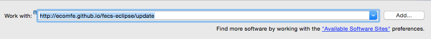

fecs-eclipse
本插件在 jshint-eclipse 插件的基础上，进行修改和扩展。
插件实现方式：通过 Java 执行命令行，获取控制台输出并展示。
执行的命令行为：
[nodeDir]node [fecsDir]fecs [options]
通过 Preferences 的设置来获取 [nodeDir] [fecsDir] 的值
使用前提
安装（更新）方式
在 help 选项卡的 Install New Software 下进行安装
- 本地安装（更新）
下载该项目代码，点击 Add -> Local... -> 打开项目的 com.eclipsesource.fecs.update 目录 -> OK
- 在线安装（更新）
在 Work with 一栏填写 update 网址：http://ecomfe.github.io/fecs-eclipse/update


使用方法
配置
在偏好设置（Preferences）中设置 Node.js 和 FECS 的 bin 路径：
配置 Node.js 的 bin 路径。
-
Use default directory of node interpreter
这个选项表示 Eclipse 可以获得系统环境变量，
[nodeDir] = ""，执行的命令行为node [fecsDir]fecs [options] -
Provide the directory of node interpreter
把选取的目录赋值给
[nodeDir]。
配置 FECS 的 bin 路径。
-
Provide the directory of fecs interpreter
把选取的目录赋值给
[fecsDir]。
配置完没有提示错误信息则可以正常使用。
启用
右键项目进入 property 可设置插件检查哪些文件
在 Configuration 子选项卡可以导入 .fecsrc 文件更细粒度的配置
代码检查
如图
代码格式化
可以通过点击工具栏的这两个按钮进行格式化（左侧的图标是格式化当前打开的文件，快捷键是 command + 6 或者 ctrl + 6，暂不支持快捷键自定义；右侧的图标是格式化左侧选中的项目/文件夹/文件）
格式化后不满意可通过回退来恢复原先文件内容，使用格式化项目或者文件夹这个功能时，property 的过滤器会起作用。